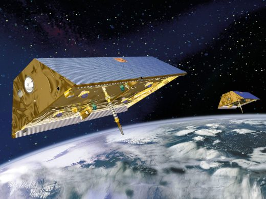

An award-winning mission that's changed
the way we study Earth's gravitational
forces and the Earth system, the Gravity
Recovery and Climate Experiment, or
GRACE, mission flew twin spacecraft in
tandem around Earth to study key changes
in the planet's waters, ice sheets and the
solid Earth.
2002 - 2017 Report for GRACE
OVERVIEW

The Gravity Recovery and Climate Experiment Follow-on
(GRACE-FO) mission is a partnership between NASA and the
German Research Centre for Geosciences (GFZ). GRACE-FO
is a successor to the original GRACE mission, which operated
from April 2002 through July 2017. Since June 2018, GRACE-
FO carries on the extremely successful work of its
predecessor while testing a new technology designed to
dramatically improve the already remarkable precision of its
measurement system.
The GRACE missions measure small month-to-month variations in gravity
over Earth's surface arising from the constant redistribution of mass.
Changes in how mass is distributed within and between Earth’s atmosphere,
oceans, groundwater and ice sheets are fundamental indicators of the large-
scale dynamics of the planet. Monitoring changes in ice sheets and glaciers,
near-surface and underground water storage, the amount of water in large
lakes and rivers, as well as changes in sea level and ocean currents provides
an integrated global view of how Earth’s water cycle and energy balance
are evolving — measurements that have far-reaching impact on our
understanding of the Earth system and important applications for everyday
life. In addition to tracking mass change, each of the two satellites uses GPS
antennas to supply at least 200 profiles of atmospheric temperature
distribution and water vapor content daily to aid in the monitoring and
orecasting of weather.
GRACE ended its science mission in October 2017.
The GRACE Follow-On mission, planned for launch in April 2018, will extend GRACE's innovative measurements.